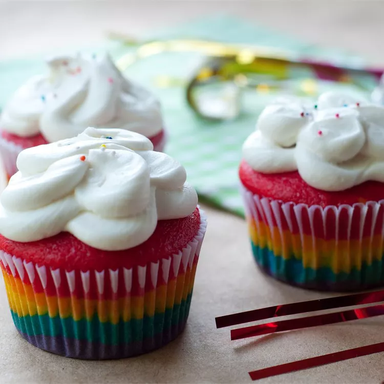

Rainbow Clown Cake

Description
Using a box of white cake mix makes this rainbow cake recipe oh-so easy. You can bake into two 8-inch cake layers as directed, or make into cupcakes as many others have. It's recommended to use food coloring paste or gel in this recipe, which are more concentrated than liquid food coloring.
Ingredients
- 3 egg whites
- 1 (18.25 ounce) package white cake mix
- 1 ⅓ cups water
- 2 tablespoons canola oil
- red paste food coloring
- orange paste food coloring
- yellow paste food coloring
- green paste food coloring
- paste food coloring
- purple paste food coloring
Steps
- Preheat an oven to 350 degrees F (175 degrees C). Grease and flour two 8-inch
round cake pans.
- Beat the egg whites with an electric mixer until frothy, about 1 minute. Add the
cake mix, water, and canola oil; continue beating for 2 minutes on medium
speed.
- Divide the cake batter into six separate bowls. Use a toothpick to scoop a dab of
food coloring into one bowl of batter and stir; add more food coloring, if
necessary, to reach the desired shade. Repeat with the remaining colors and
bowls of batter.
- Scoop spoonfuls of batter into the prepared pans, alternating the colors. Use a toothpick to gently swirl the colors for a marbled effect.
- Bake in the preheated oven until a toothpick inserted into the cake comes clean, about 30-35 minutes. Cool in the pans for 10 minutes before removing to cool completely on a wire rack.